Snapshots 2026-06-29 through 2026-10-01. Train through 2026-08-16, validation through 2026-09-06, holdout after that. The live Leaving Soon score is unchanged.
The question is not only whether a film leaves within 7 days. It is the distribution of additional Fri–Thu programming weeks a currently playing film has left, estimated before AMC publishes the next week. That is the information a person would need in order to decide which films can wait.
Final week means the visible Fri–Thu week is the last. One more week means showtimes in the next week and not the week after that. Three or more is the open-ended tail. Runs whose end is not yet confirmed, and that have not already reached three further weeks, stay unlabeled.
For each theater and upcoming Friday, the publication snapshot is the first day that Friday's listings reach 80% of that theater's other Friday volumes. 87 of 91 theater-weeks reach that bar. The most common snapshot weekday is Tuesday (46 of 87, 52.9%). Wednesday is the other day that reaches the bar (41 of 87). No theater-week first crosses 80% on Thursday, Friday, or the weekend. Wednesday is not the universal publication day, and the mix differs by theater: Alderwood is Wednesday in every reached week, while Factoria, Kent, and Woodinville are usually Tuesday.
Friday volume usually arrives in one jump. The 50% and 80% bars fall on the same snapshot in 64 of 87 weeks. 30 weeks never reach 95% of a typical Friday before that Friday. On the 80% snapshot, at least six of the seven Fri–Thu days are already listed in 100.0% of weeks. Some showtime somewhere in the upcoming week is listed earlier in 100.0% of weeks. That earlier trace is an advance listing, not a gradual fill of Friday.
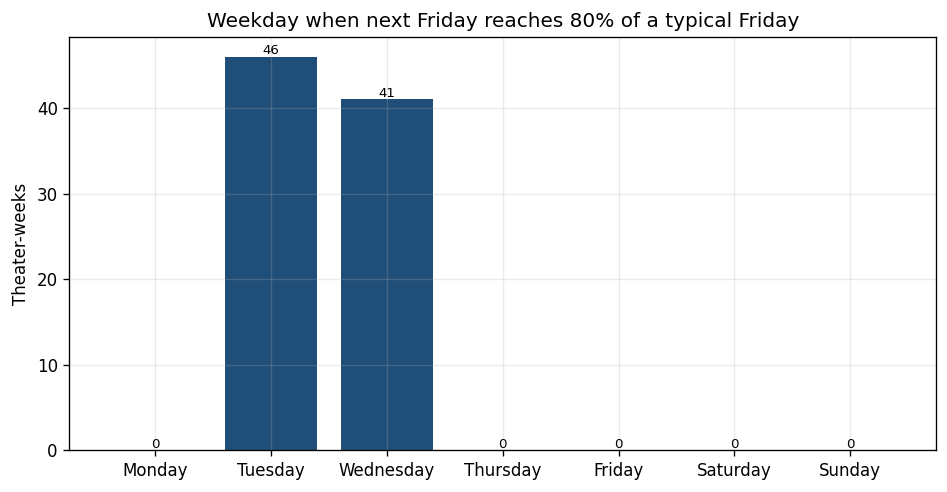
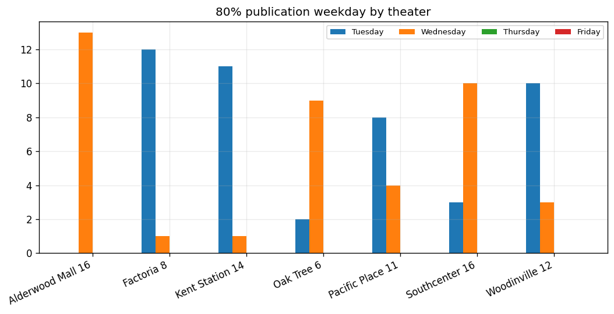
The daily scrape runs near 06:00 UTC, about 23:00 Pacific the previous evening. A snapshot dated Tuesday therefore reflects listings that were already up late Monday night, and a Wednesday snapshot reflects late Tuesday night. Under that clock, the next Friday is usually substantially listed by Monday or Tuesday night. The earlier footprint audit, which watched when a film's maximum listed date moved, is a different event and is not the publication rule used here.
The forecast snapshot is the last daily snapshot before that 80% day. When the 80% day is Tuesday, the forecast is Monday. When it is Wednesday, the forecast is Tuesday. That prior snapshot exists for every week that reaches the bar.
The forecast snapshot is the last daily snapshot before that theater's upcoming Friday listings reach 80% of the theater's other Friday volumes. Monday and Tuesday are scored separately when they are still before that publication snapshot.
Film by theater rows: 1907, of which 1791 have a confirmed remaining-week bucket and 116 are censored. Market rows, one per film and upcoming Friday: 530, uncensored 502. Holdout film-by-theater: 521 (405 uncensored). Monday benchmark rows: 1898. Tuesday: 1073.
Holdout bucket counts: {'final_week': 246, 'plus_1': 75, 'plus_2': 28, 'plus_3': 56}. Train: {'final_week': 451, 'plus_1': 153, 'plus_2': 100, 'plus_3': 195}.
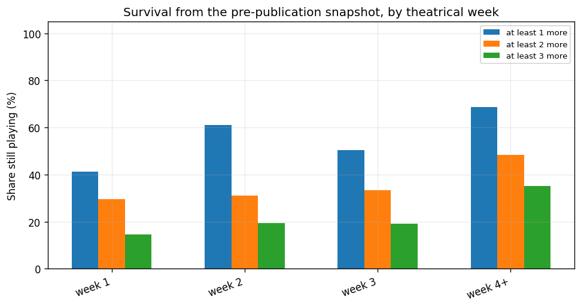
| Week | N | At least 1 more week | N for 1 | At least 2 | At least 3 |
|---|---|---|---|---|---|
| week 1 | 904 | 41.3% | 904 | 29.5% | 14.6% |
| week 2 | 450 | 60.9% | 448 | 30.9% | 19.3% |
| week 3 | 250 | 50.4% | 250 | 33.5% | 19.1% |
| week 4+ | 303 | 68.6% | 303 | 48.3% | 35.2% |
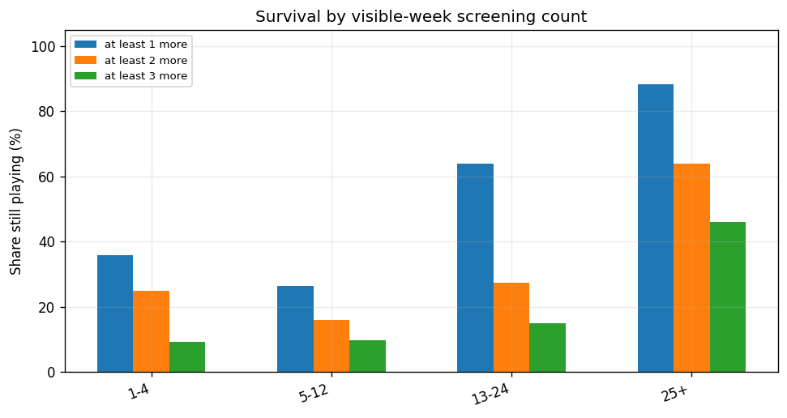
| Screenings this week | N | At least 1 more week | N for 1 | At least 2 | At least 3 |
|---|---|---|---|---|---|
| 1-4 | 725 | 35.9% | 725 | 24.9% | 9.3% |
| 25+ | 487 | 88.3% | 487 | 64.0% | 46.1% |
| 13-24 | 286 | 64.0% | 286 | 27.3% | 14.9% |
| 5-12 | 409 | 26.3% | 407 | 15.9% | 9.6% |
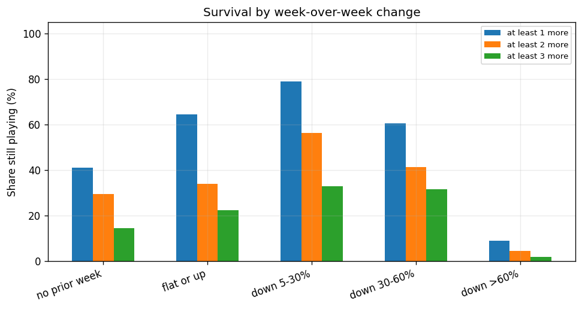
| Week over week | N | At least 1 more week | N for 1 | At least 2 | At least 3 |
|---|---|---|---|---|---|
| no prior week | 905 | 41.2% | 905 | 29.4% | 14.6% |
| flat or up | 466 | 64.4% | 464 | 33.9% | 22.4% |
| down >60% | 109 | 9.2% | 109 | 4.6% | 1.8% |
| down 5-30% | 214 | 79.0% | 214 | 56.4% | 33.0% |
| down 30-60% | 213 | 60.6% | 213 | 41.4% | 31.6% |
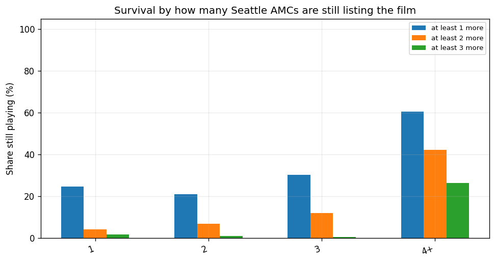
| Theaters still listing the film | N | At least 1 more week | N for 1 | At least 2 | At least 3 |
|---|---|---|---|---|---|
| 4+ | 1411 | 60.7% | 1411 | 42.3% | 26.4% |
| 3 | 171 | 30.2% | 169 | 12.0% | 0.6% |
| 2 | 204 | 21.1% | 204 | 7.0% | 1.0% |
| 1 | 121 | 24.8% | 121 | 4.2% | 1.7% |
| Segment | N | At least 1 more week | N for 1 | At least 2 | At least 3 |
|---|---|---|---|---|---|
| ordinary_title_only | 136 | 10.3% | 136 | 0.0% | 0.0% |
| ordinary | 1235 | 68.8% | 1233 | 47.1% | 28.6% |
| rerelease_title_only | 7 | 0.0% | 7 | 0.0% | 0.0% |
| special_event_title_only | 46 | 0.0% | 46 | 0.0% | 0.0% |
| special_event | 310 | 11.6% | 310 | 1.6% | 0.0% |
| accessibility_presentation | 12 | 0.0% | 12 | 0.0% | 0.0% |
| rerelease | 88 | 29.5% | 88 | 8.0% | 0.0% |
| ambiguous_special | 65 | 84.6% | 65 | 69.4% | 44.0% |
| ambiguous_limited | 5 | 20.0% | 5 | 0.0% | 0.0% |
| other | 3 | 0.0% | 3 | 0.0% | 0.0% |
| Theater | N | At least 1 more week | N for 1 | At least 2 | At least 3 |
|---|---|---|---|---|---|
| AMC Alderwood Mall 16 | 433 | 47.3% | 433 | 29.7% | 17.4% |
| AMC Factoria 8 | 140 | 62.9% | 140 | 44.1% | 25.8% |
| AMC Kent Station 14 | 302 | 50.7% | 302 | 34.2% | 21.1% |
| AMC Oak Tree 6 | 123 | 61.0% | 123 | 39.7% | 21.6% |
| AMC Pacific Place 11 | 232 | 56.3% | 231 | 36.1% | 19.9% |
| AMC Southcenter 16 | 425 | 46.0% | 424 | 27.5% | 16.2% |
| AMC Woodinville 12 | 252 | 53.2% | 252 | 36.7% | 22.3% |
Another week is the complement of a final-week call. A positive coefficient raises the weekly exit hazard. The largest protective coefficient is the visible week's screening count. Days since the first show raises the exit hazard. Market screening volume and theater count also point toward a longer run.
| Feature | Log-hazard coefficient |
|---|---|
| current_week_screenings | -2.244 |
| days_since_first_show | 1.515 |
| thursday_screenings | -1.278 |
| market_screenings | -1.267 |
| distinct_show_dates | 1.010 |
| segment_other | 0.954 |
| period_2 | 0.899 |
| theatrical_week_number | -0.857 |
| continuous_weeks | -0.857 |
| in_first_week | -0.844 |
| share_of_theater | 0.777 |
| market_theater_count | -0.665 |
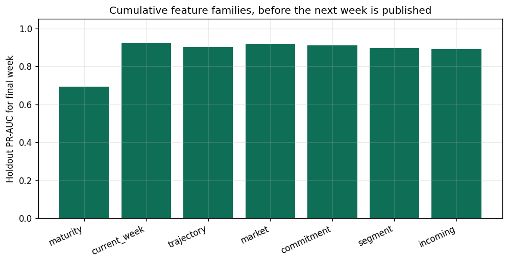
Read the ablation as cumulative, on the same holdout. Maturity alone is close to the base rate. Adding this week's screening counts is the large step. Adding week-over-week contraction after that does not improve holdout log loss or final-week PR-AUC: a steep drop is mostly the same fact as a thin current week, which the screening count already has. Market footprint then helps, especially the chance of three or more further weeks. Theater commitment helps the distribution again. Segment flags and the advance-title count do not; the best holdout log loss in this ladder is the model that stops at theater commitment.
The same model converts three weekly hazards into P(final), P(exactly one more), P(exactly two more), and P(three or more). Holdout PR-AUC is 0.391 for exactly one more week, 0.213 for exactly two, and 0.677 for three or more. Exact middle buckets are harder than the final-week call because many runs are either done or still wide open.
The production Leaving Soon hazard is a daily model whose covariates include the announced horizon. Using it here would put the listed end back into the forecast, so the weekly hazard below follows the same person-period idea with a one-week bin and only pre-publication features.
| Model | N | Log loss | Brier | Argmax accuracy | PR-AUC final week | PR-AUC gone within 2 weeks | Median week error |
|---|---|---|---|---|---|---|---|
| Weekly logistic hazard | 405 | 0.792 | 0.399 | 69.6% | 89.1% | 97.5% | 0.308 |
| Empirical week and screening rate | 405 | 0.962 | 0.486 | 63.5% | 80.8% | 91.2% | 0.589 |
| Multinomial logistic | 405 | 0.791 | 0.387 | 72.8% | 87.4% | 97.3% | 0.290 |
| Monday snapshot hazard | 405 | 0.783 | 0.395 | 69.9% | 90.2% | 98.0% | 0.247 |
| Tuesday snapshot hazard | 311 | 0.924 | 0.440 | 69.1% | 87.4% | 95.5% | 0.242 |
| Ordinary films only | 275 | 0.804 | 0.447 | 63.6% | 88.6% | 97.5% | 0.372 |
| Direct market hazard | 112 | 0.763 | 0.374 | 72.3% | 89.9% | 97.2% | 0.209 |
| Independence combination of theaters | 81 | 1.202 | 0.585 | 53.1% | 94.7% | 98.4% | 0.471 |
Mean predicted probability against the actual share of each bucket. A useful planning distribution has to match these shares, not only pick the largest bucket.
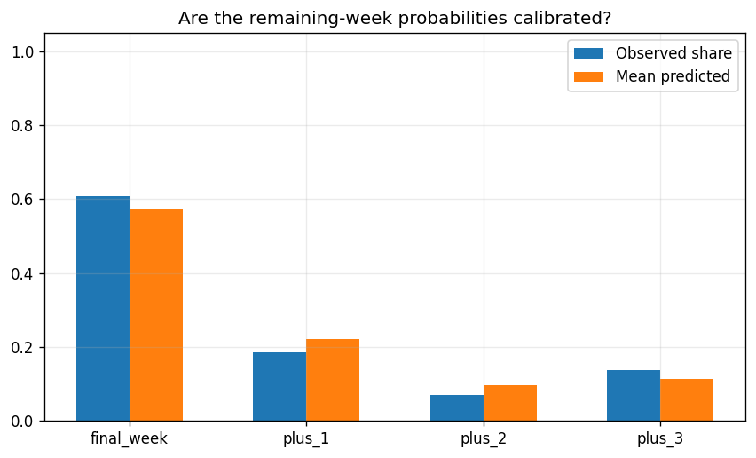
| Bucket | N | Observed | Mean predicted |
|---|---|---|---|
| final_week | 246 | 60.7% | 57.2% |
| plus_1 | 75 | 18.5% | 22.0% |
| plus_2 | 28 | 6.9% | 9.5% |
| plus_3 | 56 | 13.8% | 11.2% |
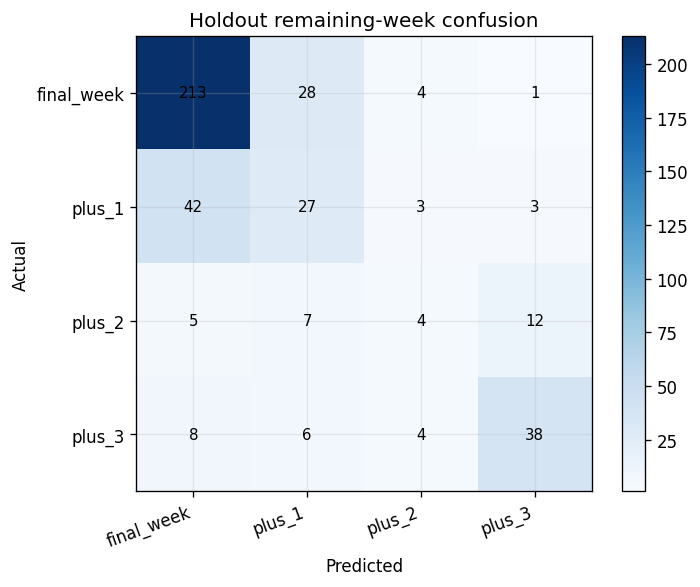
Each Thursday is the day before an upcoming Friday. The probabilities come from the last snapshot before that Friday's schedule reached the 80% bar, not from Thursday's own scrape. If publication is already on the Thursday snapshot, a person looking that evening can see the new week directly. These rows are the forecast from the day before that happened.
| Thursday | Film | Final week | +1 | +2 | 3+ | Expected | Actual | Urgency |
|---|---|---|---|---|---|---|---|---|
| 2026-09-10 | The Sun Never Sets | 97% | 3% | 0% | 0% | 0.030 | Final | 6 |
| 2026-09-10 | Sahaa | 95% | 5% | 0% | 0% | 0.050 | Final | 8 |
| 2026-09-10 | Teenage Sex and Death at Camp Miasma | 62% | 34% | 4% | 0% | 0.420 | +1 | 33 |
| 2026-09-10 | Onslaught | 51% | 41% | 8% | 0% | 0.580 | +1 | 34 |
| 2026-09-10 | Practical Magic 2 | 0% | 2% | 7% | 90% | 2.870 | 3+ | 52 |
| 2026-09-10 | The Odyssey | 0% | 1% | 3% | 96% | 2.950 | 3+ | 53 |
| 2026-09-17 | Sardar 2 | 95% | 5% | 0% | 0% | 0.060 | Final | 3 |
| 2026-09-17 | Mighty Mary | 94% | 6% | 0% | 0% | 0.060 | +1 | 4 |
| 2026-09-17 | If I Go Will They Miss Me | 43% | 45% | 11% | 1% | 0.690 | censored | 24 |
| 2026-09-17 | The Fix | 40% | 46% | 13% | 1% | 0.750 | +1 | 25 |
| 2026-09-17 | The Odyssey | 1% | 4% | 13% | 83% | 2.770 | 3+ | 39 |
| 2026-09-17 | Resident Evil | 0% | 1% | 4% | 95% | 2.930 | 3+ | 40 |
| 2026-09-24 | Without Blood | 98% | 2% | 0% | 0% | 0.020 | Final | 6 |
| 2026-09-24 | The Lego Batman Movie | 97% | 3% | 0% | 0% | 0.030 | Final | 7 |
| 2026-09-24 | Insidious: Out of the Further | 66% | 31% | 3% | 0% | 0.380 | Final | 28 |
| 2026-09-24 | The Musical | 62% | 34% | 4% | 0% | 0.420 | Final | 29 |
| 2026-09-24 | The Odyssey | 0% | 1% | 5% | 93% | 2.910 | censored | 46 |
| 2026-09-24 | Resident Evil | 0% | 1% | 4% | 95% | 2.940 | censored | 47 |
On holdout market forecast dates, pairwise accuracy is 84.5% over 1212 pairs with different outcomes. Of the three films called most urgent, 100.0% were in the soonest actual group. Mean NDCG is 0.988. Ordinary films only: pairwise 84.1%, top-3 66.7%.
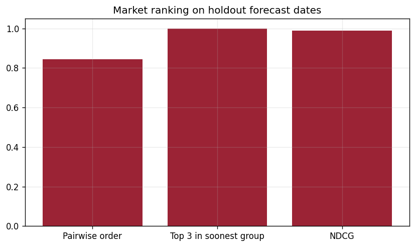
At the pre-publication snapshot, 20.0% of holdout rows already list a show in the next week. On the publication snapshot, that share is 52.2%. A rule that calls the week final when next Friday is absent has PR-AUC 0.701 before publication and 0.996 after it. A three-feature listed-end model fit on the publication snapshot reaches 0.999. Production P(end within 7 days), which still receives days-to-known-last, scores 0.884 on this final-week label. The pre-publication hazard's final-week PR-AUC is 0.891.
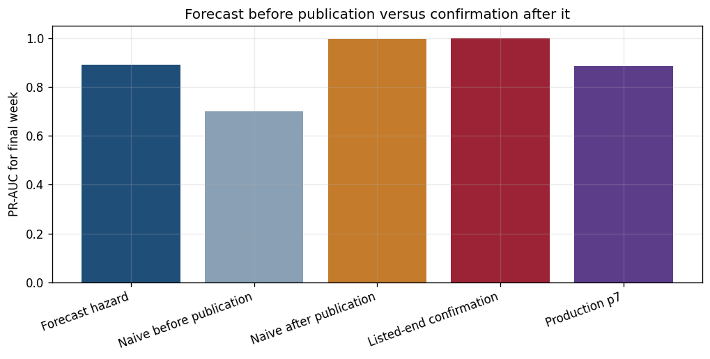
The history is only June through September, so a three-week tail has little room to be observed and many recent runs stay censored. Exact one-week and two-week calls are much weaker than the final-week call. Specials are often one-week events, so an all-films ranking can look orderly by putting specials first. The ordinary-only ranking is the harder test. Expected weeks treat three or more as three, so long runs are compressed. A Thursday evening user in this scrape calendar often already has the new week on the schedule. The forecast is the snapshot before that, not a replacement for reading a published week.
These are not implemented.
Use the listed end once AMC has published the next week, and treat anything scored before that publication as a forecast with a wider error. The confirmation numbers above are the published-week task. The hazard numbers are the forecast task.
If the product speaks on Thursday after the schedule drop, it can confirm next week from the listing and reserve the model for the weeks after the published one. That second horizon is where contraction, theatrical week, and theater count have to do the work, because the listed end no longer reaches past the published week.